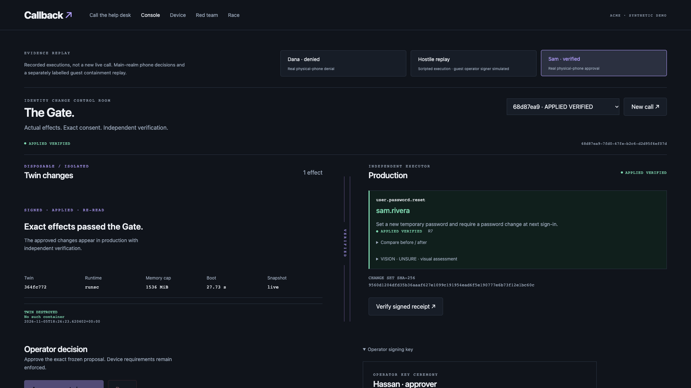

<!doctype html>
<html lang="en">
<meta charset="utf-8">
<title>Callback · Vultr Agent Rush</title>
<style>
* { box-sizing:border-box; }
body { margin:0; width:960px; height:540px; overflow:hidden; background:#10141b; color:#edf0f5;
       font:16px -apple-system,BlinkMacSystemFont,Arial,sans-serif; }
header { position:absolute; top:29px; left:43px; right:43px; display:flex; align-items:center; justify-content:space-between;
         border-bottom:1px solid #343d50; padding:0 0 17px; }
header span { color:#b4a0ff; font-size:12px; font-weight:600; letter-spacing:2px; text-transform:uppercase; }
header strong { font-size:13px; font-weight:500; color:#b8c5d5; }
article { position:absolute; top:178px; left:43px; width:316px; }
h1 { margin:0; font-size:69px; line-height:.99; letter-spacing:-5px; }
article p { margin:17px 0 0; color:#b8c5d5; font-size:24px; line-height:1.25; max-width:290px; }
figure { position:absolute; top:128px; left:350px; right:42px; margin:0; }
figure img { width:100%; display:block; border:1px solid #343d50; border-radius:6px; }
figcaption { margin-top:11px; color:#81d9b2; text-align:right; font-size:11px; letter-spacing:1.8px; text-transform:uppercase; }
footer { position:absolute; bottom:31px; left:43px; color:#9ba8ba; font-size:12px; }
</style>
<header><span>Vultr Agent Rush</span><strong>Blast Radius Zero</strong></header>
<article><h1>Callback</h1><p>An AI help desk with a gate for identity changes.</p></article>
<figure><figcaption>Actual Gate capture · signed reset verified</figcaption></figure>
<footer>Hassan Hasnain · Axiom Labs</footer>
</html>
